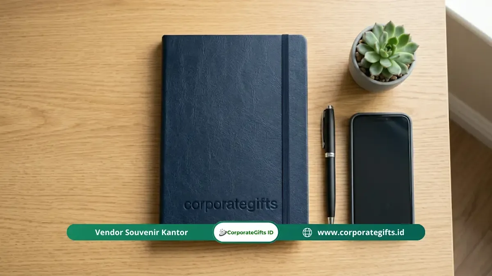

Corporate Gifts ID - Pulpen branded dan buku catatan berlogo adalah dua item goodie bag seminar korporat dengan tingkat pemakaian tertinggi karena langsung digunakan peserta selama dan setelah acara berlangsung. Kombinasi keduanya sangat efektif membangun brand recall lebih dari 12 bulan jika dipilih dengan kualitas material, teknik cetak, dan kemasan yang tepat.
Memberikan alat tulis seminar bukan sekadar memenuhi kelengkapan acara, melainkan menciptakan kontak merek pertama (first touchpoint) yang berkesan saat peserta mulai menyimak sesi materi.
- Pulpen berkualitas dengan bodi berbobot mantap dan aliran tinta lancar lebih efektif menjaga citra profesional dibanding pulpen plastik generik yang mudah rusak.
- Buku catatan A5 hardcover dengan kertas 70 gsm ke atas adalah standar minimum yang direkomendasikan untuk seminar bisnis dan korporat.
- Teknik cetak logo presisi seperti laser engraving, blind deboss, atau foil stamping menentukan impresi kemewahan produk.
- Kombinasi pulpen dan buku catatan dalam satu set kemasan terpadu meningkatkan nilai persepsi (perceived value) acara secara signifikan.
- Perencanaan pengadaan minimal 3 minggu sebelum acara memastikan kualitas kustomisasi dan ketepatan jadwal distribusi logistik.
Mengapa Pulpen dan Buku Catatan Menjadi Item Wajib Goodie Bag Seminar?
Pulpen dan buku catatan adalah dua komponen yang langsung diaktifkan saat peserta duduk di ruang konferensi atau lokakarya. Kebutuhan utama yang muncul seketika adalah mencatat poin penting narasumber, kontak rekan bisnis, atau resume diskusi.
Ketika kebutuhan spontan ini terpenuhi oleh produk berkualitas tinggi berlogo perusahaan Anda, terbentuk asosiasi emosional positif sejak menit pertama acara. Tidak ada item promosi lain dalam paket seminar kit yang memiliki waktu aktivasi seawal dan seintensif alat tulis.
Riset industri dari Promotional Products Association International (PPAI) mencatat bahwa alat tulis promosi berkualitas memiliki tingkat retensi penggunaan lebih dari 12 bulan oleh lebih dari 50% penerimanya. Pulpen dan notebook kerja tersebut terus menemani meja kantor peserta hingga berbulan-bulan setelah seminar selesai.
Apa Jenis Pulpen Branded yang Paling Tepat untuk Seminar Korporat?
Pulpen branded terbaik untuk seminar korporat adalah pulpen berbahan metal solid atau resin bermutu tinggi, bukan pulpen plastik tipis yang meninggalkan kesan sekali pakai:
1. Pulpen Ballpoint Metal Premium
Menggunakan formula tinta minyak yang stabil, awet, dan cepat kering di atas kertas. Bodi logam beraksen matte atau glossy memberikan bobot mantap di genggaman, mencerminkan kelas dan reputasi penyelenggara acara.
2. Pulpen Gel & Rollerball
Menghasilkan goresan tinta yang pekat dan mengalir sangat mulus tanpa memerlukan tekanan berlebih saat menulis. Sangat disukai oleh peserta seminar eksekutif yang memerlukan kenyamanan menulis cepat dalam durasi panjang.
3. Pulpen Multifungsi dengan Stylus
Opsi modern yang sangat relevan untuk audiens generasi digital. Ujung silikon stylus di bagian atas memudahkan navigasi layar tablet atau smartphone saat sesi seminar interaktif berlangsung.
Satu hal yang pantang dikompromikan adalah kualitas mekanisme pegas dan kelancaran tinta. Pulpen macet atau bocor di tangan peserta akan langsung merusak reputasi profesional instansi Anda. Simak juga ulasan terkait di panduan menyusun seminar kit profesional.

Buku catatan hardcover PU leather dengan aksen deboss logo elegan disandingkan pulpen metal meja kerja.
Bagaimana Memilih Buku Catatan Berlogo yang Tepat untuk Seminar?
Kualitas buku catatan (notebook atau blocknote) berlogo untuk seminar korporat ditentukan oleh empat faktor fundamental:
1. Material Sampul (Cover)
Hardcover berbahan kulit sintetis (PU Leather), linen fabric, atau karton greyboard tebal memberikan proteksi maksimal dan kesan formal. Sedangkan softcover berbahan art carton doff laminasi cocok untuk konsep seminar yang dinamis dan fleksibel.
2. Kualitas dan Gramatur Kertas Dalam
Standar minimal adalah 70 gsm agar tinta pulpen tidak tembus ke halaman belakang (bleed-through). Untuk seminar eksekutif, kertas 80 gsm jenis bookpaper cream bertekstur lembut memberikan kenyamanan visual yang menenangkan mata saat membaca catatan.
3. Sistem Penjilidan (Binding)
- Spiral Binding (Kawat Ring): Memungkinkan buku dibuka 360 derajat rata di atas meja atau saat dipangku tanpa meja.
- Jahit Benang & Perfect Binding: Memberikan tampilan buku agenda eksekutif yang rapi, solid, dan tidak mudah lepas helai demi helai.
4. Format Ukuran Standar
Ukuran A5 (14,8 x 21 cm) adalah ukuran paling ergonomis untuk seminar karena menyediakan ruang catat yang leluasa namun tetap muat ke dalam tas kerja jinjing. Untuk opsi ringkas, ukuran A6 (10,5 x 14,8 cm) dapat dipertimbangkan untuk seminar berdurasi pendek.
Matriks Komparasi Spesifikasi Alat Tulis Seminar
Gunakan tabel acuan berikut untuk mempermudah penentuan spesifikasi paket alat tulis sesuai tingkatan acara Anda:
| Tingkatan Acara | Spesifikasi Pulpen | Spesifikasi Buku Catatan | Rekomendasi Cetak |
|---|---|---|---|
| Seminar Massal / Publik | Ballpoint plastik ABS rubberized | Blocknote A5 spiral jilid atas, HVS 70 gsm | Pad printing & offset full color |
| Pelatihan & Lokakarya B2B | Metal pen clicker / gel rollerball | Notebook A5 softcover / spiral samping, 80 gsm | Laser grafir & digital UV print |
| Konferensi & Eksekutif VIP | Heavy metal pen twist mechanism + velvet box | Hardcover PU leather agenda + pita pembatas, 80 gsm | Laser engraving & blind deboss / foil emas |
Teknik Cetak Logo yang Tepat untuk Pulpen dan Buku Catatan
Memilih metode kustomisasi yang tepat memastikan logo brand Anda tampil tajam, presisi, dan tahan gesekan:
- Laser Engraving (Grafir): Pilihan utama untuk pulpen logam. Mengikis lapisan terluar metal sehingga menghasilkan grafir permanen yang tidak akan luntur atau mengelupas seumur hidup.
- Blind Deboss / Emboss: Teknik cetak timbul/tenggelam tanpa tinta pada sampul kulit buku catatan, menciptakan nuansa mewah berkelas (subtle branding).
- Hot-Print Foil Stamping: Menambahkan aksen metalik berkilau (emas, perak, atau tembaga) pada logo sampul notebook.
- Digital UV Flatbed Printing: Sangat ideal untuk logo korporat yang memiliki gradasi warna rumit pada bodi pulpen atau permukaan cover notebook.
Pelajari berbagai opsi teknologi cetak kami di halaman layanan cetak dan kustomisasi logo.
Tips Mengemas Pulpen dan Buku Catatan dalam Goodie Bag Seminar
Pengemasan yang apik membentuk pengalaman buka kemasan (unboxing experience) yang menyenangkan bagi peserta:
- Gift Set Hardbox Terpadu: Menempatkan buku catatan dan pulpen berdampingan di atas busa beludru die-cut dalam satu kotak magnetik mengangkat prestise acara ke level tertinggi.
- Belly Band / Sleeve Kertas: Melilitkan pita kertas berdesain khusus di sekeliling buku catatan dan pulpen memberikan kesan rapi dengan biaya terjangkau.
- Kartu Sambutan Personal: Menyisipkan greeting card dari pimpinan penyelenggara di halaman pertama buku catatan memperkuat kedekatan dengan peserta.
Anda juga dapat memadukannya dengan merchandise pelengkap seperti tumbler stainless custom dan tote bag kanvas berlogo.
Pertanyaan Seputar Pulpen & Buku Catatan Seminar (FAQ)
Kesimpulan
Pulpen branded berkualitas dan buku catatan berlogo yang dipilih secara cermat merupakan fondasi utama goodie bag seminar korporat yang profesional. Prioritaskan keandalan material dan kecocokan teknik cetak, karena satu set alat tulis berkualitas tinggi jauh lebih efektif membangun brand recall jangka panjang dibanding souvenir massal yang lekas rusak.
Jelajahi beragam pilihan notebook eksklusif dan pulpen metal kustom di e-katalog Corporate Gifts atau hubungi konsultan kami untuk simulasi penawaran harga terbaik.
Disclaimer: Spesifikasi jenis kertas, bahan sampul notebook, dan variasi pulpen dalam artikel ini tersedia lengkap di fasilitas produksi CorporateGifts.ID dan dapat disesuaikan dengan pedoman brand identity perusahaan Anda.